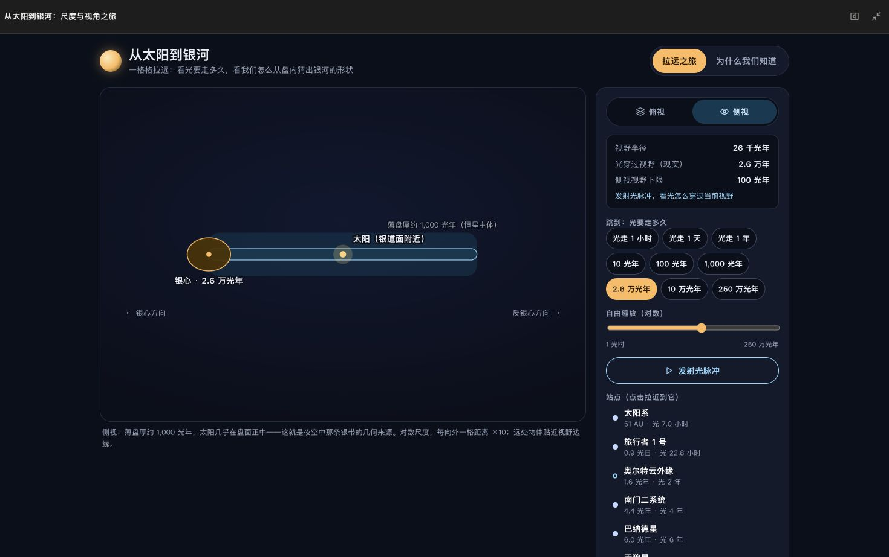
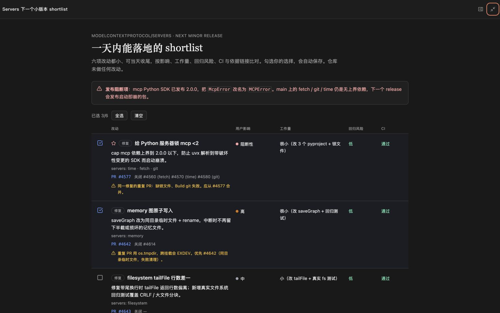

GDeepSeek Harness GenUI0.10.1
Make the useful part interactive.
Disposable React apps that can use connected tools, remember choices, and stay inside the conversation.
Inline + CanvasTask stateScoped permissions

Explore scale, not a static diagram

Decide with live repository evidence